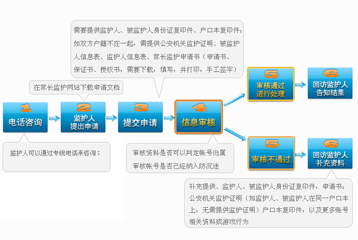

工程介绍
"网络游戏未成年人家长监护工程"是一项由中华人民共和国文化部指导，网络游戏企业共同发起并参与实施，旨在加强家长对未成年人参与网络游戏的监护，引导未成年人健康、绿色参与网络游戏，和谐家庭关系的社会性公益行动。"家长监护机制"这一公益行动中，针对目前未成年人缺乏自控及自律能力，容易陷入沉迷；少数监护人缺少时间照顾孩子，不能及时监督孩子游戏时间的现状，而推出的一种可由家长实施监控，纠正部分未成年子女沉迷游戏的保护机制。
供申请监督方式：
A. 屏蔽账号：根据监护人意愿屏蔽相关游戏应用登陆。B. 账号动态监控：登陆、修改密码等操作将发短信至监护人手机。
1）账号已经有认证手机的，将监护人手机替换为认证手机；
2）账号未认证手机，将监护人手机绑定成认证手机；
可以选择的监护结果
限制被监护的游戏账号：1、每天玩游戏的时间长度；
2、每周玩游戏的时间长度；
3、每天玩游戏的时间段；
4、完全禁止进入游戏。
未成年人健康参与网络游戏提示
一、申请条件
1、申请人需为被监护未成年人的法定监护人；
2、申请人的被监护人年龄小于18周岁；
3、申请人需为大陆公民，不含港、澳、台人士。
二、申请需要提交材料
1、监护人信息表（包含监护人的身份证明复印件）；
2、被监护人信息表（包含被监护人所玩游戏相关信息及身份证明复印件）；
3、填写网络游戏未成年人家长监护申请书、保证书、授权书并手工签字（需下载，填写并打印，签字）；
4、申请人与被监护人的监护关系证明文件（户口簿或有关机关出具的证明文件）。
三、申请方式
服务热线（仅供咨询）：021-58555799
您可以通过联系电话、信件或来访的方式联系我们：
3、电子邮件：wanghuanqing@66yxq.com
4、来访及信件:公司名称：上海亘聚信息科技有限公司 公司地址：上海浦东新区龙东大道3000号张江集电港1号楼906B
四、其他要求
1.申请人应提交较完备的申请材料，对未提供的信息要及时补充；可请熟知电脑、互联网、游戏的人员进行协助，以便提供详实资料；2.申请人应保证提交的信息真实有效；对于提供虚假信息或伪造证件，我司将保留进一步追究法律责任的权利。
三、家长监护申请流程

三、家长监护在线申请
《网络游戏未成年人监护申请》需要您先下载并完善以下资料，所有表格都需要您的亲笔签名！1、《监护人信息表》： 点击下载
2、《被监护人信息表》： 点击下载
3、《家长监护申请书》： 点击下载
家长监护体系FAQ
Q:什么样的情况可申请家长监护服务？A:申请人需为被监护未成人的法定监护人，申请人的被监护人年龄小于18周岁，申请人需为大陆公民，不含港、澳、台人士。
Q：家长可通过什么途径申请家长监护服务？
A：家长可通过传真、信件、在线申请、邮件申请或来访的方式提交相关材料，申请家长监护服务。
Q：家长可申请哪些限制？
A：家长可申请游戏时间的限制，比如：每天玩几个小时、每天什么时段可以玩游戏、每周可以玩几个小时、每周什么时段可以玩游戏或完全禁止登陆游戏。
Q：申请家长监护需要提供哪些资料？
A：需要到网站下载《监护人信息表》、《被监护人信息表》、《网络游戏未成年人家长监护申请书》、《监护法律关系证明》。按照表格内容要求进行填写并准备监护人、被监护人身份证明以及家庭关系与监护关系证明。
Q：表格是否可以不下载，按照内容写在纸上能受理吗？
A：为确保监护人所发送的内容准确无误，建议您下载申请表格，并且按照表格上的要求严格填写。如填写不完整，可能无法受理成功。
Q：监护人提供了户口簿，是否可以不用出具监护关系证明了？
A：监护人必须提供户口簿，并且也需要需要到当地派出所开具监护关系证明。
Q：申请书不签名可以吗？
A：《监护人信息表》、《网络游戏未成年人家长监护申请书》、《监护法律关系证明》必须手写签名才能受理。监护人未签字，或者签字字迹潦草无法识别的都无法受理成功；被监护人如果不愿意在《被监护人信息表》上签名的，不影响申请。
Q：被监护人的信息与游戏账号的注册信息不一致，是否能申请监护？
A：被监护人的信息必须与游戏账号的注册信息一致，否则此项服务将无法受理。监护人可以申请根据被监护人身份信息查询是否存在对应的游戏账号，（客服与传真处理专岗联系查询，两个工作日内由客服进行回复)。
Q：家长监护服务是否收费？
A：此项服务为免费服务。
Q：提交申请后多久能受理？
A：在收到监护人所提供的材料后2个工作日内，由客服核对被监护人身份信息是否与游戏帐号注册信息一致，以及监护人所提供的信息是否符合服务要求。并与监护人进行电话联系。
Q：家长申请监护成功后怎么查询处理进度？
A：家长可以在网站自助查询处理进度

服务电话：021-58555799
服务邮箱：wanghuanqing@66yxq.com
服务邮箱：wanghuanqing@66yxq.com

公司名称：上海亘聚信息科技有限公司 公司地址：上海浦东新区龙东大道3000号张江集电港1号楼906B 客服邮箱：wanghuanqing@66yxq.com 客服电话：021-58555799、021-58555966